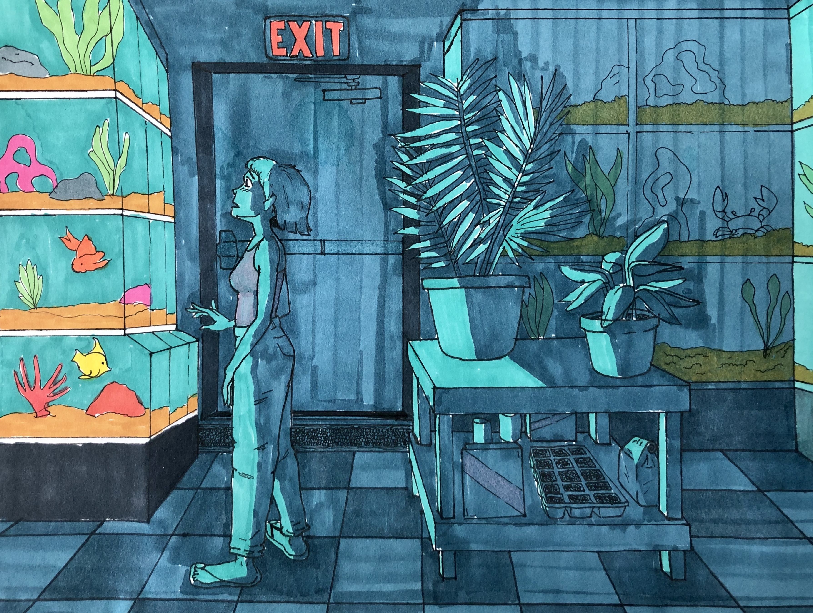

May 1st 2026
Welcome to the Gallery
Take a look around! There are many treasures to behold. These projects have been in my rotation for over a decade now. I created these characters as an inspiration from all the different cartoons and comic strips I consumed as a kid. The medium of using fantastical characters in otherwise non-extrodinary scenes have always been a source of inspiration for me. Exploring the relationships between the characters evolves all the time as I evolve myself. I hope you find something of inspiration for yourself in these pieces. Please send me a message with any inquiry you may have!

May 1st 2026
Coming Home Late
Here are two of my most commonly used characters; Rabbit and Elf. I've never officially designanted them names. I'm almost waiting for my characters to name themself. The closest I've ever gotten as a proper name for the girl is Robin.
Homepage
Robin's 1st Appearance
Here is her first appearance in 2015. This is the first time I ever drew her.

May 1st 2026
Snow Day!
I live in the mountains, and have always lived near mountains, and I for some reason, have the hardest time trying to portray them correctly. This piece is one of the few times I felt like I captured the right amount of shadow, and detail in order to convince the viewer maybe they could be real in some sort of dream-like way. Mountains are just a bunch of triangles! They shouldn't be so hard to convey and yet they are. Maybe I feel that way because I look at them every day.
Homepage
The Failed Comic Book
This is an example of mountains I would draw years ago as a teenager. Not bad but not great either. I attempted to make a hand-made comic book as my senior project, got three pages in, and then gave up.